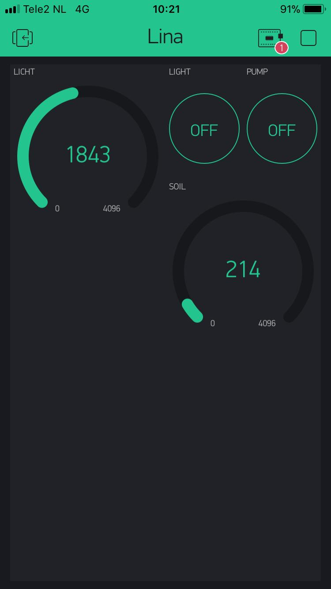

Voor het vak Smart Technology hebben wij enkele workshops IoT gevolgd. Hierin leerden wij wat Internet of Things precies inhoudt en hoe dit in de praktijk toegepast wordt. Dit hebben wij in een zestal sessies geleerd.
Onze opdracht heette
Smart Plant en de opdracht was om een zichzelf aansturend systeem te
ontwikkelen rondom de verzorging van een plant. Dit deden we met
behulp van sensoren die de omgeving toestand van de plant monitort.
Als er bepaalde waarden overschreden worden, activeert het systeem en
past de nodige verzorging (reactie) toe. De mogelijke reacties die
wij geïmplementeerd hebben zijn de toevoeging van water en/of licht.
Wij hebben dit systeem aan de smartphone app Blynk gekoppeld, zodat
er op gemonitord en/of ingegrepen kan worden.
Wij hebben dit process doorlopen door eerst met de Arduino IDE te oefenen, wat voor de meeste studenten namelijk nieuwe materie was. Zo hadden sommige studenten nog nooit een microprocessor gezien. Er is eerst geoefend met het activeren van LED lampjes door middel van codes schrijven voor de Arduino IDE en deze codes vervolgens up te loaden naar het besturingssysteem. Er zijn verschillende opdrachten uitgevoerd om eerst te oefenen, voordat er aan de Smart Plant gewerkt kon worden.
Wij hebben hierbij hulp gehad van onze MSI docent Hubèrt Bijsterveld, en gastdocent Tim Geers.
Op deze pagina tonen wij ons eindresultaat in de vorm van afbeeldingen. Wij laten onze opstelling van de Arduino zien en het interface van de Blynk app. Voor een meer gedetailleerde beschrijving en onze code verwijzen wij u door naar ons volledig ontwerpverslag op deze link. Daarnaast zullen wij de werking van onze Smart Plant aan u tonen op het eindseminar op maandag 28 januari 2019.
Onze Arduino schakeling ziet er als volgt uit:
Onze Blynk app interface ziet er als volgt uit:
